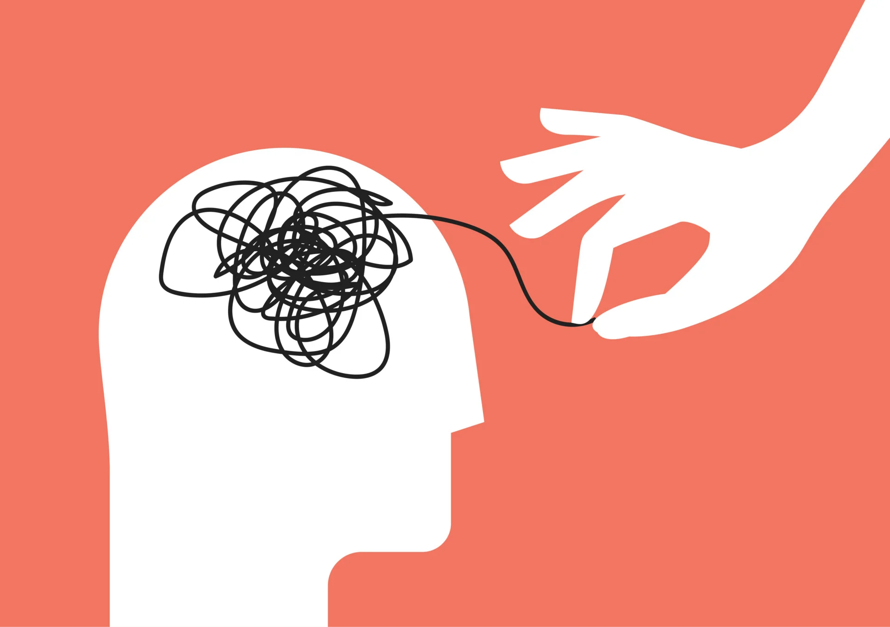
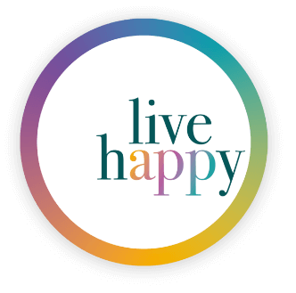
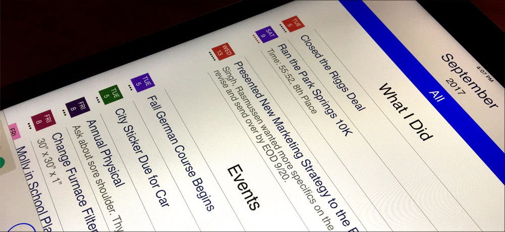
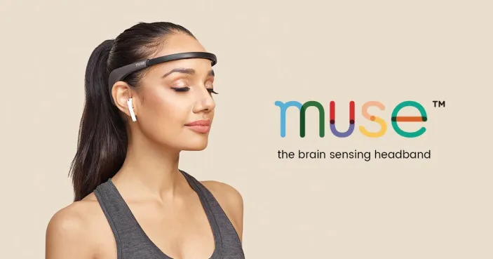
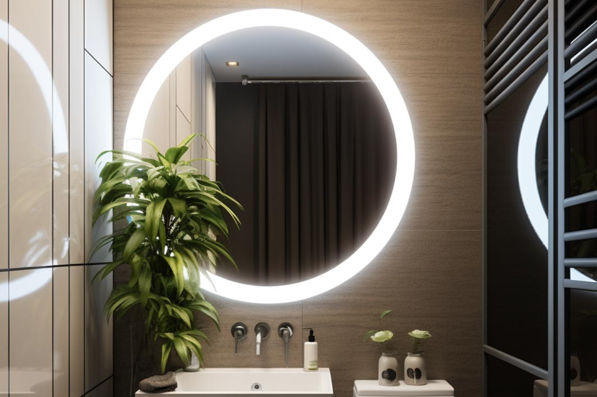

Psychology is the study of the human mind and its functions, the way of thinking for humans.
There are many topics in psychology but their main focus is to understand the human mind to better understand and help humans with their mental health.
Technology plays an important role that helps people with their physiological feelings and with benefiting the community by allowing there to be many apps, gadgets, and devices that help with understanding the human mind to improve it.
This website will open the creativity of the future of psychology to better understand human emotions and behaviors that we can learn from.

Software and Hardware
Low Frequency

Live Happy
Psychology app that can be used occasionally
App that suggests activities or exercises that can be done for your health.
New methods and ideas will be suggested to use during your life.
Occasionally can be used whenever you feel stuck on deciding what is healthy and beneficial in your life, creating a way to live a better life.
Medium Frequency

Traxitall
An psychology app that can be used a few times in a week.
This app can help identify goals that you want to achieve and set priorities to be completed.
Progress is monitored through “Traxitall” and can be used frequently for a few times during the week.

Muse Headband
This headband plays gentle audio feedback to keep the human mind focused.
The headband reads and measures brain signals whenever you feel troubled and can be put on a few times a week.
High Frequency

Baracoda BMind
A psychology gadget that can be used daily.
An AI powered mirror that identifies the moods of how people are feeling, recognizing gestures, and mental state.
A useful gadget that can be used throughout the day whenever you look into the smart mirror.
This gadget can help with managing the stress during the day.